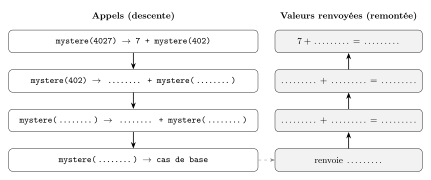

Télécharger la version PDF imprimable (6 pages)
Rappels de syntaxe Python
assert condition, "message"lève uneAssertionErrorsi la condition est fausse ;help(objet)affiche la documentation (docstring) d'un module, d'une classe ou d'une fonction ;- Pour une liste
t,t.append(x)ajoutexà la fin ; t.pop()retire et renvoie le dernier élément ;t.pop(0)retire et renvoie le premier.
Exercice 1 (6 points)⚓︎
Cet exercice porte sur la récursivité.
On considers la fonction suivante, où n est un entier positif ou nul :
1 2 3 4 | |
Rappel mathématique
Pour un entier \(n\) positif ou nul, on pose la division euclidienne de \(n\) par 10 :
n % 10est le reste de cette division, c'est-à-dire le chiffre des unités de \(n\) ;n // 10est le quotient entier, c'est-à-dire le nombre \(n\) privé de son chiffre des unités.
Exemple : \(358 = 10 \times 35 + 8\), donc 358 % 10 vaut 8 et 358 // 10 vaut 35. De même, 7 % 10 vaut 7 et 7 // 10 vaut 0.
Question 1. Recopier et compléter le schéma des appels récursifs ci-dessous lors de l'appel mystere(4027). La colonne de gauche décrit les appels successifs (descente), la colonne de droite les valeurs renvoyées (remontée, à lire de bas en haut). En déduire la valeur de mystere(4027).

Question 2. Préciser en une phrase ce que calcule la fonction mystere.
Question 3. Identifier le cas de base. Justifier que l'appel mystere(n) se termine pour tout entier n positif ou nul.
Un élève propose la variante suivante :
1 2 3 4 | |
Question 4. Expliquer ce qui se produit lors de l'appel mystere_bis(-5). Proposer une modification de la fonction qui signale clairement ce mauvais usage.
Indication : En Python -5 // 10 vaut -1 et -1 // 10 vaut -1.
Question 5. On souhaite écrire une fonction récursive nb_chiffres(n) qui renvoie le nombre de chiffres de l'écriture décimale de l'entier positif ou nul n. Par exemple, nb_chiffres(4027) renvoie 4 et nb_chiffres(0) renvoie 1.
- a. Pour quelles valeurs de
nle nombre de chiffres est-il égal à1? En déduire la condition du cas de base. - b. Compléter : « 4027 a ....... chiffre(s) de plus que 402 ». En déduire, pour \(n \geq 10\), une relation de la forme
nb_chiffres(n) = ....... + nb_chiffres(.......). - c. Recopier et compléter le code ci-dessous. On pourra s'inspirer de la structure de la fonction
mystere.
1 2 3 4 | |
Question 6. Un mot est un palindrome s'il se lit de la même façon dans les deux sens, comme « kayak » ou « radar ». Écrire une fonction récursive est_palindrome(mot) qui renvoie True si la chaîne mot est un palindrome et False sinon. On pourra utiliser mot[0], mot[-1] et mot[1:-1], qui désigne la chaîne privée de son premier et de son dernier caractère.
Exercice 2 (8 points)⚓︎
Cet exercice porte sur la programmation objet, les piles et files et la modularité.
Un établissement scolaire gère les impressions papiers de ses élèves. Un développeur a écrit le module pile.py ci-dessous :
1 2 3 4 5 6 7 8 9 10 11 12 13 14 15 16 17 18 19 20 21 22 | |
Partie A – Vocabulaire et utilisation d'un module⚓︎
On exécute le programme suivant, placé dans le même dossier que pile.py :
1 2 3 4 5 6 7 8 | |
Question 1. En vous appuyant sur le code ci-dessus, citer : le nom de la classe, le nom d'un attribut, le nom de deux méthodes et le nom d'un objet (instance de la classe).
Question 2. Indiquer ce qu'affiche ce programme. Justifier à partir de vos connaissances sur le mode de fonctionnement d'une pile.
Question 3.
- a. On supprime la première ligne
from pile import Piledu programme ci-dessus. Indiquer ce qui se produit à l'exécution et expliquer pourquoi. - b. La commande
help(Pile)affiche les documentations de la classe et de ses méthodes. En vous appuyant sur la documentation de la méthodedepiler:- citer la précondition à respecter ;
- indiquer quelle méthode de la classe
Pilepermet de vérifier cette précondition ; - nommer l'erreur obtenue si la précondition n'est pas respectée.
Partie B – Deux implémentations d'une file⚓︎
Les demandes d'impression doivent être traitées dans leur ordre d'arrivée. On souhaite disposer d'une classe File respectant l'interface suivante :
| Opération | Rôle |
|---|---|
File() |
Crée une file vide. |
f.est_vide() |
Renvoie True si la file f est vide, False sinon. |
f.enfiler(x) |
Ajoute x à la fin de la file. |
f.defiler() |
Retire et renvoie le premier élément de la file. Précondition : la file n'est pas vide. |
Question 4. Expliquer la différence entre les modes FIFO et LIFO. Pour chacune des situations suivantes, indiquer s'il est préférable d'utiliser une pile ou une file :
- La file d'attente de l'imprimante ;
- La fonction « annuler » (
Ctrl+Z) d'un traitement de texte ; - Le bouton « page précédente » d'un navigateur.
Question 5. Écrire une première implémentation de la classe File dont l'unique attribut contenu est une liste Python.
Question 6. Écrire une seconde implémentation de la classe File utilisant deux attributs entree et sortie, tous deux de type Pile (module pile.py).
Principe :
* On enfile en empilant sur entree ;
* Pour défiler, si sortie est vide, on dépile tous les éléments de entree dans sortie, puis on dépile sortie.
Question 7. Avec cette seconde implémentation, on exécute les opérations suivantes sur une file vide f :
1 2 3 4 5 | |
Représenter le contenu des piles entree et sortie après ces opérations, en indiquant le sommet de chaque pile.
Question 8.
Invariance d'interface
Les deux implémentations précédentes définissent chacune une classe nommée File. Pour pouvoir les conserver toutes les deux, on les enregistre dans deux modules distincts : celle de la question 5 dans le fichier file_liste.py, celle de la question 6 dans le fichier file_piles.py.
Le programme de gestion des impressions commence par la ligne from file_liste import File, qui importe l'implémentation de la question 5. Il n'utilise ensuite que File(), est_vide, enfiler et defiler. On remplace cette première ligne par from file_piles import File, qui importe l'implémentation de la question 6, sans rien modifier d'autre.
Le programme fonctionne toujours. Compléter la phrase suivante, en utilisant les mots interface et implémentation :
« Le programme fonctionne toujours car il n'utilise que ....................... de la classe
File, qui est la même dans les deux versions. Seule ....................... a changé, c'est-à-dire la manière dont les éléments sont stockés : ....................... dans la première version, ....................... dans la seconde. »
Partie C – Utiliser les deux structures⚓︎
Question 9. Écrire une fonction inverser(f) qui prend en paramètre une file f et renvoie une nouvelle file contenant les mêmes éléments dans l'ordre inverse. On utilisera uniquement les opérations des interfaces de Pile et de File. On suppose que les classes Pile et File ont déjà été importées : il n'est pas demandé d'écrire les lignes d'import.
Remarque : Après l'appel, la file f est vide : cet effet de bord est voulu et fait partie de la spécification de la fonction.
Exercice 3 (6 points)⚓︎
Cet exercice porte sur la mise au point des programmes.
Un élève a écrit le module statistiques.py pour traiter les notes d'une classe. Chaque note est un nombre compris entre 0 et 20. Ce module contient plusieurs erreurs :
1 2 3 4 5 6 7 8 9 10 11 12 13 14 15 16 17 18 19 20 21 22 23 24 25 | |
Question 1. Indiquer la valeur renvoyée par moyenne([12, 8, 10]) puis corriger la fonction. Expliquer pourquoi le nom de paramètre l est un mauvais choix et en proposer un meilleur.
Question 2. L'appel maximum([5, 14, 9]) provoque l'erreur IndexError: list index out of range. Expliquer l'origine de cette erreur et corriger la fonction.
Question 3. La spécification de mention est la suivante : « TB » si \(moy \geq 16\), « B » si \(14 \leq moy < 16\), « AB » si \(12 \leq moy < 14\), « Passable » sinon. Indiquer ce que renvoient mention(12) et mention(9). Identifier les deux erreurs et corriger la fonction.
Question 4. On exécute les instructions suivantes :
1 2 3 | |
Indiquer ce qui est affiché. Nommer le phénomène observé et réécrire ajouter_bonus pour que la liste passée en paramètre ne soit plus modifiée.
Question 5. Un programme principal saisit une note au clavier avec note = input("Note : "), puis l'ajoute à une liste d'entiers avant d'appeler moyenne. Une erreur TypeError apparaît. Expliquer sa cause et proposer une correction.
Question 6.
1. Écrire la documentation de la fonction moyenne corrigée, en précisant le paramètre, la valeur renvoyée et la précondition. Ajouter une assertion qui vérifie cette précondition.
2. Écrire deux tests de la fonction moyenne à l'aide d'assertions.
3. Le test assert moyenne([0.1, 0.2]) == 0.15 échoue alors que la fonction est correcte. Expliquer pourquoi et réécrire ce test pour qu'il soit pertinent.